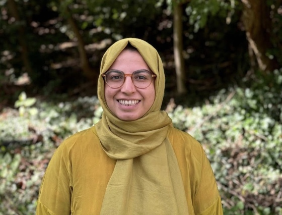

Assistant Professor · Electrical and Electronics Engineering
Keeping electricity reliable as the grid changes.
Illustration: the shape of a daily electricity demand curve.
I am Asiye Kaymaz Özcanlı, an Assistant Professor in the Department of Electrical and Electronics Engineering at Fatih Sultan Mehmet Vakıf University. I recently served as a visiting postdoctoral researcher (February 2024 – July 2025) in the Department of Engineering and Public Policy at Carnegie Mellon University through the TÜBİTAK 2219 postdoctoral fellowship program, where I worked with Prof. Ramteen Sioshansi on projects examining how electric-vehicle batteries can enhance electricity-supply resilience for residential customers.
I received my B.S. and double-major degree in Electrical Engineering and Mechanical Engineering from Yıldız Technical University in 2010, followed by my M.S. and Ph.D. degrees in Electrical Engineering in 2016 and 2022. My research interests include renewable energy integration, microgrids, outage probability, battery storage modeling, electricity market data analysis, agrivoltaics, and machine learning applications for modern power-system applications.

What I work on
Grid resilience and storage
Batteries, electric vehicles and charging networks when the grid is under stress.
02Electricity market open data
What Türkiye's public market data shows about plant outages, hydropower and wind.
03Agrivoltaics and land
Where solar and farming can share land, and what solar irrigation costs.
04Deep learning for microgrids
Detecting islanding and other events in inverter-based microgrids.
Work with me
I welcome messages from students who want to do thesis or project work on these topics, and from researchers and organisations interested in joint projects.
Write a few lines about what you would like to work on and attach your CV.